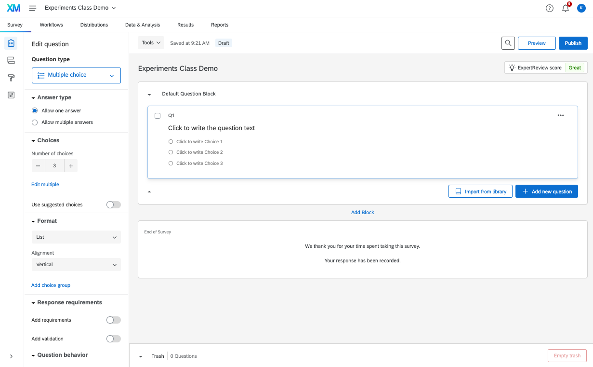

## my data are in a /data/ subfolder of my working directory
expdemo <- read.csv("data/expdemo.csv")
expdemo <- expdemo[-c(1:2),] # remove first two rows
nrow(expdemo)[1] 500In this section, we discuss best practices for experimental design, as well as implementing a design in Qualtrics.
The two primary conceptualreadings are:
We will also use an applied reading later on to discuss programming experiments.
Four main ingredients in an experimental design
What does an experimental design test?
Broadly “causal effects”: More specifically:
How can we evaluate experiments?
“Validity refers to the extent to which the results of a particular experiment support some more general conclusion.”
What makes a good treatment? Does it require realism?
Your ideas …
How does our excludability assumption factor into this?
Your ideas …
What does it mean to say a treatment is generalizable?
Your ideas …
How can we increase engagement with our experiments?
Your ideas …
What is a manipulation check, and what role does it serve?
Your ideas …
What are the tradeoffs between digital vs. analog experiments?
Your ideas …
What are the tradeoffs between lab vs. field experiments?
Your ideas …

What are the strengths and weaknesses of different types of designs?
Your ideas …
Everyone at Rutgers gets a free Qualtrics account. Qualtrics provides a user-friendly interface for designing online surveys and survey experiments.
We will walk through how to design a simple survey experiment on the platform.
This should take you to a landing page that looks something like this:

When running an academic survey, generally, the first survey question should be a consent form.
After the consent form, you might ask respondents a set of “pre-treatment” questions, such as demographics, attention checks, etc. These are things you want to know about respondents prior to when they enter your experiment.
Now we are ready to program an experiment. There are many ways to do this, but we will choose a couple of common approaches.
For this example, we will use the experimental design from “Public Opinion and Foreign Electoral Intervention” by Michael Tomz and Jessica Weeks, published in the American Political Science Review in 2020. The article is here.
They “hypothesize that American tolerance of foreign intervention should depend on the type of intervention and the intended beneficiary. We distinguish three modes of interference: verbal endorsements, threats, and operations.”
These are contrasted with a comparison of staying out of the election.
Hypotheses
Table 1 in the paper displays the experimental design used to test the hypotheses. We will program the primary manipulation, which varies the endorsement, threat, operation, or stay out conditions. For now, we will fix the country to be China, the candidate to be the Democratic candidate, and the operation to be donating money and 100% certainty it was China.
In this approach, we will create a separate block for each unique experimental vignette. In our case, we will create a block with a Text/Graphic question type. We paste in our experimental text and give the block and question informative labels. The question name will be the name of the variable for the question when you eventually load the data.


After creating each experimental block, we can then add a new block with our outcome questions. Go ahead and add 1-2 outcome questions so that you have an example.If your outcome condition text is specific to each treatment condition, you can create outcome questions within the experimental blocks.
Finally, after that, you may have some last demographic questions. You can put those in yet another last block.
Once you have created all your blocks, you can now go to the survey flow. To do that, click on the icon in the left side of the survey landing page.

Your survey flow should look something like this. We are now ready to add randomization so that each respondent only sees one of our experimental blocks, randomly assigned.

Within the survey flow, add a randomizer underneath the consent form.

As people go through the survey, under the hood of qualtrics, they will be assigned one of your experimental condition values. This embedded data field will show up as a variable in the data you download. However, we need one more step to make sure people only see the experimental block that corresponds to their embedded data field. This works through branching.
A last thing we often want to do is add a branch underneath the consent form to end the survey for anyone who does not consent to take the survey. The specific end-of-survey message you provide may be different depending on which company you use to recruit respondents. For now, we will use a default end-of-survey message.
You are now ready to “Preview” your survey!
We could complicate the randomization more so than we have done so far. For example, in Tomz and Weeks (2020), they do not fix the country to be China. Instead, they randomly vary this to be China, Pakistan, or Turkey for each respondent. We could build this added treatment arm into our design through “piped text.”


We could complicate our design even further by adding additional piped text randomization to vary whether it is the Democratic vs. Republican candidate, the percent certainty about the country involved, and the type of operation. This would all involve adding additional randomizers and/or branching in the survey flow, along with piped text in the experimental blocks.
Once you have a draft of your survey programmed, you will want to “preview” the survey from the perspective of a respondent by clicking “preview” in the survey landing page.

Repeat this a few times to see if things seem to be working properly. After that, you can do a few more steps to test your survey.
With both of these options, your survey will start to populate responses in the Data and Analysis section of Qualtrics. Click on this now that you have done one or both of these steps.
This will give you an overview of the responses and number of recorded responses.
This is also where we can download the data. Go to Export and Import - > Export Data.
If you open up your .csv file in a spreadsheet software like Excel, you will notice that the first row contains your question names as variables. The next two rows are more information about the questions, including the question wording. The actual responses start in row 3.
qualtRics has a function that will do this for you.Load the data into R.
## my data are in a /data/ subfolder of my working directory
expdemo <- read.csv("data/expdemo.csv")
expdemo <- expdemo[-c(1:2),] # remove first two rows
nrow(expdemo)[1] 500library(qualtRics)
## my data are in a /data/ subfolder of my working directory
expdemo <- read_survey("data/expdemo.csv")
── Column specification ────────────────────────────────────────────────────────
cols(
.default = col_character(),
IPAddress = col_logical(),
Progress = col_double(),
`Duration (in seconds)` = col_double(),
Finished = col_logical(),
RecipientLastName = col_logical(),
RecipientFirstName = col_logical(),
RecipientEmail = col_logical(),
ExternalReference = col_logical(),
LocationLatitude = col_double(),
LocationLongitude = col_double(),
UserLanguage = col_logical(),
manipcheck_year = col_double()
)
ℹ Use `spec()` for the full column specifications.nrow(expdemo)[1] 500Let’s limit the sample to those who agreed to our consent form. Locate your consent variable and subset on those who agree.
expdemo <- subset(expdemo, QID1 == "I Agree")At this stage, we just have fake/test respondents. However, we can still see if the randomization works properly and if the outcome questions are populating in the way we want.
For example, we want about a quarter of respondents assigned to each of the experimental conditions.
table(expdemo$treat)
endorsement operation stayout threat
71 58 57 56 And let’s make sure our outcomes are populating correctly. Note how people from each condition have populated the outcomes. This gives us confidence that the survey logic is working correctly. If, for example, no one from the endorsement condition had answered the outcome, this might mean we had a typo or other error in our survey logic.
table(expdemo$approval)
Approve somewhat Approve strongly
51 46
Disapprove somewhat Disapprove strongly
49 43
Neither approve nor disapprove
53 table(condition=expdemo$treat,
outcome = expdemo$approval) outcome
condition Approve somewhat Approve strongly Disapprove somewhat
endorsement 13 15 19
operation 13 9 9
stayout 15 11 7
threat 10 11 14
outcome
condition Disapprove strongly Neither approve nor disapprove
endorsement 13 11
operation 9 18
stayout 11 13
threat 10 11If our survey programming was all set, at this point, you could actually set up your entire R code and analysis based on the fake data. That would mean that all you have to do after you run the survey with real respondents is switch the dataset you load into the software. That would be the ultimate “pre-analysis plan.”
Once you are done testing in Qualtrics, back in the Data and Analysis page, you can delete all responses using Tools -> Delete data.
Once you are done testing and revising the survey, you are now ready to integrate it with your preferred survey firm/recruiting platform. The specific steps from here going forward vary across platforms.
Qualtrics has a number of other features you can use, including different question types, the ability to randomize the order of response options, features to require/request responses.You can continue to explore these as you develop your own surveys.
Their help pages are pretty useful. Here is one on question types.
This blog post from Crystal Lewis also mentions several important tips and quirks of Qualtrics to consider when building a survey.
For those familiar with “conjoint experiments” that have a lot of randomization, Anton Strezhnev has developed a tool for programming these in Qualtrics. See information here.
It is also possible to download data from Qualtrics directly into R using an R package here.